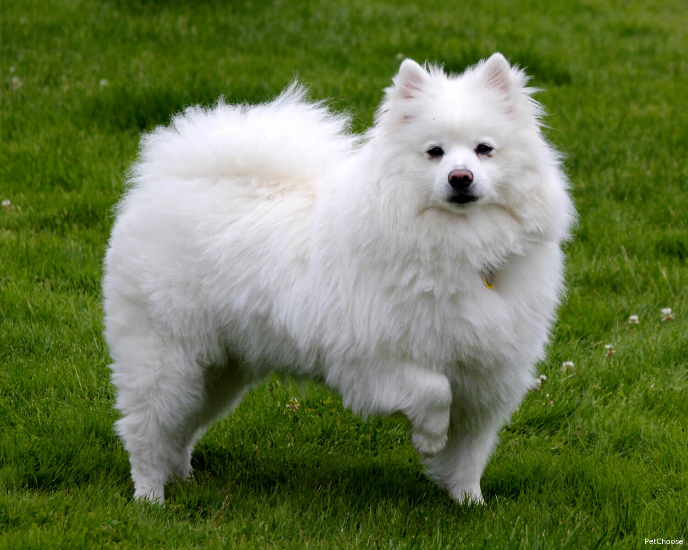
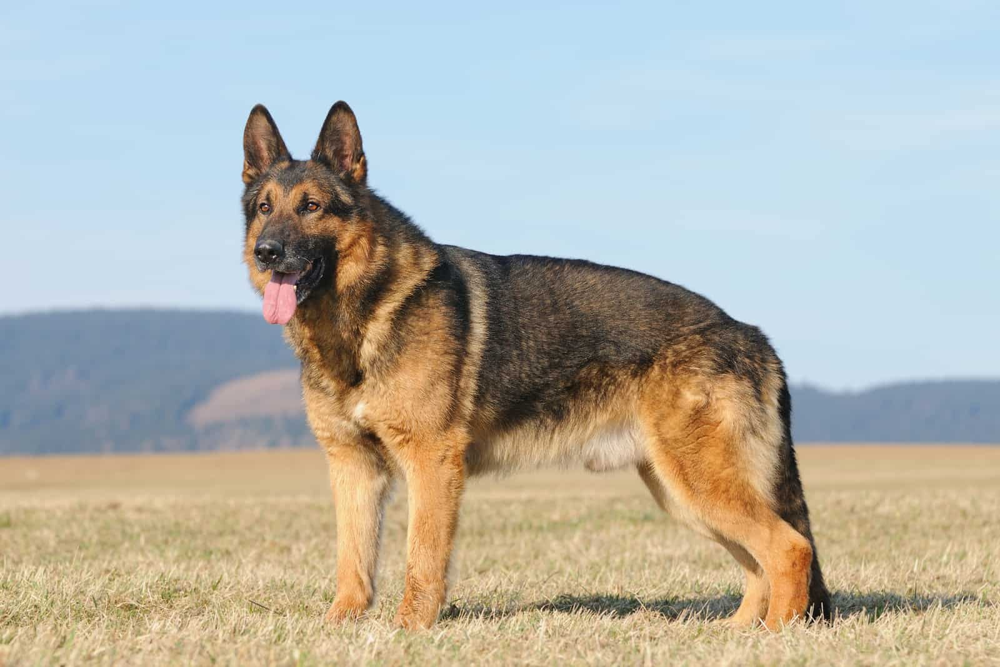

Dog breed
Pit Bull

Five facts about Pit Bull
- Not a single breed – "Pit Bull" is a term that refers to several breeds, including the American Pit Bull Terrier, American Staffordshire Terrier, and Staffordshire Bull Terrier.
- Strong and muscular – Pit Bulls are known for their powerful build and high energy levels.
- Very loyal – With proper training and socialization, Pit Bulls are incredibly loyal and loving companions.
- Great with kids – They were once called "nanny dogs" because of their gentle nature with children.
- Misunderstood reputation – Despite media portrayals, Pit Bulls are not inherently aggressive and can be very friendly and affectionate.
Samoyed

- Fluffy and white – Samoyeds have a thick, white double coat that keeps them warm in cold climates.
- Always smiling – Their upturned mouths give them a signature “Sammy smile,” which helps prevent drooling and icicles in cold weather!/li>
- Originally sled dogs – They were bred by the Samoyede people in Siberia to herd reindeer and pull sleds.
- Very social – Samoyeds are friendly, gentle, and love being around people (not a great choice if you’re rarely home!).
- Heavy shedders – They “blow” their coat seasonally, so get ready for some serious grooming!
German shepherd

- Highly intelligent – German Shepherds are one of the smartest dog breeds, making them easy to train.
- Loyal protectors – They’re known for their loyalty and protective instincts, often used as police, military, and guard dogs.
- Active and energetic – This breed needs regular exercise and mental stimulation to stay happy and healthy.
- Great working dogs – Originally bred for herding sheep, they now excel in many jobs, including search and rescue and service work.
- Strong bond with owners – German Shepherds form deep connections with their families and thrive on companionship.